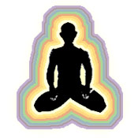

| |
Auras

The aura is a part of our psychic anatomy, readily seen by psychics
and others with special abilities. The aura radiates around us and
all living things, always in constant motion, vibrating and
pulsating. Our state of mind affects our aura, as do lifestyles,
emotions, thoughts and attitudes.
The aura has three layers or subtle bodies. The first is the etheric,
composed of energy from beyond the earth. It is our celestial being.
This is the force we radiate to others. In Sanskrit it is called "prana",
the Chinese call it "chi" and the Japanese call it "ki". This
etheric field is about an inch from the physical body. Spritzing
lotions, massage and perfume oils enhance this field. Our thoughts
vibrate in this field and it is said that our karmic needs for
certain experiences are placed in here to guide us into what we came
to do. It is believed that our karmic shield comes into our mother
in the seventh month and becomes part of the etheric body. This is
when the soul enters the body, at this point we start working on our
past karma.
The second auric layer is the astral. Typically, astral means,
connected to the stars. This energy helps us to see the world and
weave our energies through it. It extends about a foot from our body
and relates to our emotional state. Our moods, feelings and the
energy we send to others are dictated by this body. Our illnesses
are filtered down by our state of being in the astral body. The
third layer is our spirit body. It is our soul force which is and
always will be. It has the capacity to project out farthest from our
body as much as 200 yards, depending on our spiritual development
and our actions during the course of our life.
Chakras
The word chakra bears its roots in Sanskrit, meaning wheels or
vortexes. Some of the first seers were the tantric masters who
developed this system. Described as wheels of force arranged
vertically on the trunk and head, the charkas are transfer points
for our thoughts and feelings and the physical functioning of
specific endocrine glands. The chakra system is the mechanism
through which angry thoughts can affect liver-adrenal metabolism,
for instance, or fear of speaking the truth could disturb the normal
functioning of the thyroid gland. Charkas exist on the outside of
the physical body and are points of connection through which energy
flows from one being to another. This may explain why we are
attached to some people or why we cannot make a connection with
others.
Charkas are like flowers on a stalk, and connect from the front of
the body all the way to the back of the spine; when they are open
they are like bells and you can feel the energy. Even though you may
not be able to feel the chakras, you might be able to feel them with
your hands. When there is a balance between the chakras, you have
maximum vitality and health.
The energy flowing is what makes it possible for our physical bodies
to exist. The chakras open and close according to our emotions; our
state of mind affects whether they are glowing bright or blocked.
According to a person's level of development, chakras, appear in
different diameters. As we work on ourselves, acquire discipline and
take time off for self development, our chakras pulsate with light.
When our emotions are blocked, they become dull and sluggish.
The Seven Chakras
|
|
The "muladadhara
chakra" or the first chakra resonates in men between
the genitals and the anus. In women the force resonates from the
cervix of the uterus.
When blocked, may cause constipation, hemmorrhoids, lower back
pain, sciatica, fear, sciatica, instability, loss of power.
The "svadhishana chakra" or the second chakra
represents our creative energy and is associated with our
reproductive organs. It is our sexual energy. This wheel
vibrates from the pubic bone and expresses itself through our
creative will. When blocked, may lead to lack of purpose,
impotence, frigidity, cystitis, confusion, restlessness,
fantasies, jealousy, guilt.
When open, we can experience our creativity, approaching every
challenge in a positive manner. We open to understand our
sexuality.
The "manipura chakra" or the third chakra is
located on the solar plexus, in the lower thoracic area and the
diaphragm. It is connected energetically to the functioning of
the adrenals, pancreas, responsible for regulating blood sugar.
When blocked, we experience digestive, gastric problems, lust
for power, we become overbearing, pushy and egocentric. When
open, we attune our will to the will of God. |
The "anahata chakra" or the fourth chakra is
associated with the heart and the thymus. Located in the mid-chest
area, it is also the centre which joins the higher and the lower
chakras. When this centre is restricted, it can cause cardiac
problems, loneliness, isolation, hatred, and aloofness.
When open, we experience unconditional love, and we have the ability
to see the past and our memories as an opportunity to heal. Our
challenges are lessons and we experience a sense of connectedness to
all things.
The "vishuddha chakra" or the fifth chakra is located
in the throat and neck area. When obstructed or blocked it may led
to communication problems, hearing and speech disabilities, sore
throats, and difficulty in expression of feelings. When open, we
become a channel of truth, and nothing holds back our expression.
The "ajana chakra" or the sixth chakra, which also
seats the third eye, is located above or between the eye brows,
affects our receptivity and is associated with the pituitary gland.
When blocked we experience vision problems, headaches, feelings of
separation, fogginess and dizziness. When open we see a deep
connection to all things, it stimulates clairvoyance. We develop the
ability to witness the world without judgement or attachment to the
outcome.
The "sahasrara chakra" or the seventh chakra is
located at the crown of the head and is associated with the pineal
gland. It is the source of divine energy and self realisation. When
blocked, it makes us egoistic, disconnected and dull. When open, the
ego gives way to compassion and a connection to the supreme power.
At this instant the energy reverses and radiates brilliance. We
experience enlightenment.
|